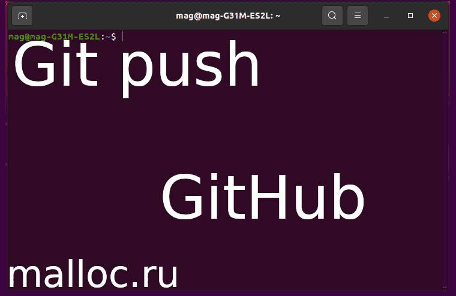

<!DOCTYPE html><html/><title>Как отправить существующий проект на GitHub</title><meta http-equiv="content-type" content="text/html; charset=utf-8"/><meta name="description" content="Создаем локальный репозиторий git и отправляем его на удаленный репозиторий GitHub. В статье присутствует пошаговая инструкция и есть видео, в котором показано все на практике. Автор показал как использует исполняемый файл .sh для выполнения push на GitHub. В статье используется OS Ubuntu. Подробнее..."/><meta name="viewport" content="width=device-width, initial-scale=1"/><link rel="stylesheet" href="../css/style.css"/><link rel="stylesheet" href="https://cdnjs.cloudflare.com/ajax/libs/font-awesome/4.7.0/css/font-awesome.min.css"/><script>document.oncontextmenu = cmenu; function cmenu(){ return false; }</script><!-- Body --><body lang="ru-RU" class="malloc-post"/><noscript/></noscript><!-- Navbar --><nav class="malloc-top malloc-bar malloc-theme malloc-left-align malloc-large malloc-card"/><a href="../index.html" class="malloc-bar-item malloc-button malloc-hover-white" style="font-size: 14px;"/>главная</a><a href="../articles-1.html" class="malloc-bar-item malloc-button malloc-hover-white" style="font-size: 14px;"/>статьи</a><a href="../about.html" class="malloc-bar-item malloc-button malloc-hover-white" style="font-size: 14px;"/>донат</a></nav><!-- Main content: shift it to the right by 210-275 pixels when the sidebar is visible --><div class="malloc-main malloc-auto" style="margin-left:150px"/><!-- main{ --><div class="malloc-row malloc-padding-64"/><!-- text{ --><!-- Статья --><div class="malloc-threequarter malloc-padding"/><!-- { --><h1 class="malloc-center malloc-theme-main malloc-card malloc-auto malloc-cursive" style="border-radius:5px;">Как отправить существующий проект на GitHub</h1><!-- Вступление --><p style="font-size: 14px" class="malloc-padding-small"/>Создаем локальный репозиторий git и отправляем его на удаленный репозиторий GitHub.<br/>В статье присутствует пошаговая инструкция и есть видео, в котором показано все на практике.<br/>Автор показал как использует исполняемый файл .sh для выполнения push на GitHub.<br/>Действие происходит в терминале Ubuntu.<br/><br/>Так же в статье присутствуют видео, в которых все показано на практике.</p><div class="malloc-auto" style="margin-top:40px; width:80.99999%; hight:80.99999%"/></div><!-- Подзаголовок 0 --><p class="malloc-padding-small"/><div class="malloc-padding-16"/></div><h2 class="malloc-text-teal">Установим Git</h2><ul class="malloc-ul"/><div class="malloc-padding-small"/><li/>Открываем терминал:<br/>"Ctrl+Alt+T" или "ПКМ, открыть Терминал"(англ. - Open in Terminal).</li><br/><li/>В терминале пишем:<br/><code class="malloc-text-teal malloc-border malloc-bar-item"/>sudo apt update</code><br/><code class="malloc-text-teal malloc-border malloc-bar-item"/>sudo apt install git</code><br/><p class="malloc-padding-small malloc-cursive malloc-border malloc-theme-l5" style="font-size:14px"/>"sudo" - это права суперпользователя (root).<br/>"apt update" - обновить список доступных пакетов.<br/>"install git" - установить Git.<br/></p></li></div></ul></p><!-- Подзаголовок 1 --><p class="malloc-padding-small"/><div class="malloc-padding-16"/></div><h2 class="malloc-text-teal">Создаем локальный и удаленный репозитории</h2><ul class="malloc-ul"/><div class="malloc-text-blue" style="font-size:18px;"/>Шаг 0</div><div class="malloc-padding-small"/><li/>Открываем терминал:<br/>"Ctrl+Alt+T" или "ПКМ, открыть Терминал"(англ. - Open in Terminal).<br/>В открывшемся окне Терминала, записываем команды, которые подробно описаны ниже.</li><br/><li/>Создаем директорию (папку) - Repo:<br/><code class="malloc-text-teal malloc-border malloc-bar-item"/>mkdir Repo</code><br/>Директория нужна, что бы хранить там файл(ы).<p class="malloc-padding-small malloc-cursive malloc-border malloc-theme-l5" style="font-size:14px"/>"mkdir" - это команда для создания новых директорий (папок).<br/></p></li><br/><li/>Заходим в папку:<br/><code class="malloc-text-teal malloc-border malloc-bar-item"/>cd Repo</code><br/><p class="malloc-padding-small malloc-cursive malloc-border malloc-theme-l5" style="font-size:14px"/>"cd" - нужна для перемещения по директориям.<br/></p></li><br/><li/>В папке создаем файл "README.md" и записываем в него название нашего проекта.<br/>Например: Test<br/><code class="malloc-text-teal malloc-border malloc-bar-item"/>echo '# Test' > README.md</code><br/><p class="malloc-padding-small malloc-cursive malloc-border malloc-theme-l5" style="font-size:14px"/>"echo" - в данном случае используется для создания и записи строки в файл README.md</p></li></div><br/><div class="malloc-text-blue" style="font-size:18px;"/>Шаг 1</div><div class="malloc-padding-small"/><li/>Теперь создадим локальный репозиторий .git:<br/><code class="malloc-text-teal malloc-border malloc-bar-item"/>git init</code><br/></li><br/><li/>Добавляем файл "README.md" в .git:<br/><code class="malloc-text-teal malloc-border malloc-bar-item"/>git add README.md</code><br/></li><li/>Метка о внесенных изменениях:<br/><code class="malloc-text-teal malloc-border malloc-bar-item"/>git commit -m "first commit"</code><br/></li></div><br/><div class="malloc-text-blue" style="font-size:18px;"/>Шаг 2</div><div class="malloc-padding-small"/><li/>Заходим в свой аккаунт на <a id="GitHub" class="malloc-hover-black" style="text-decoration:underline;"/>GitHub</a> и создаем новый репозиторий: Test<br/></li></div><br/><div class="malloc-text-blue" style="font-size:18px;"/>Шаг 3</div><div class="malloc-padding-small"/><li/>Возвращаемся в терминал.<br/>Добавляем адрес удаленного репозитория.<br/><code class="malloc-text-teal malloc-border malloc-bar-item"/>git remote add origin https://github.com/USER/Test.git</code><a class="malloc-text-blue" style="text-decoration:none;"/>&#42;</a><br/>USER - ваше имя аккаунта на GitHub: <b/>../code-malloc/Test.git</b><br/>Конечно можно скопировать с GitHub команды и вставить уже готовый вариант.<br/>Но я хочу, что вы прочувствовали весь процесс сами.</li><br/><li/>Почти все готово. Осталось обновить внешние ссылки вместе со связанными объектами:<br/><code class="malloc-text-teal malloc-border malloc-bar-item"/>git push -u origin master</code><br/>Вводим имя аккаунта и пароль.<a class="malloc-text-blue" style="text-decoration:none;"/>&#42;</a><br/>Если вы все сделали правильно, то произойдет загрузка(upload) файла "README.md" на удаленный репозиторий GitHub.</li><br/><li/>Возвращаемся в браузер и обновляем страничку(перезагрузить F5).<br/>Если появился файл "README.md" с надписью "Test", то все было сделано верно.<br/>Если его нету, то не спишите отчаиваться. Посмотрите видео, которое находиться ниже.</li><sub class="malloc-cursive malloc-text-blue"/>&#42; Вы можете сделать тоже самое, но через SSH. Данная тема выходит за рамки этой статьи.</sub></div></ul><!-- Видео 0 --><br id="Видео-0"><br/><div alt="Video-desktop" class="malloc-ad-desktop malloc-center"/><!-- для ПК --><object style="width:560px; height:315px;" data="https://www.youtube.com/embed/1DZKthNmILw" frameborder="0" allow="accelerometer; autoplay; clipboard-write; encrypted-media; gyroscope; picture-in-picture" allowfullscreen="allowfullscreen"></object></div><div alt="Video-mobile" class="malloc-ad-mobile malloc-center"/><!-- для мобильников --><object style="width:250px; height:180px;" data="https://www.youtube.com/embed/1DZKthNmILw" frameborder="0" allow="accelerometer; autoplay; clipboard-write; encrypted-media; gyroscope; picture-in-picture" allowfullscreen="allowfullscreen"></object></div></p><hr/><!-- Подзаголовок 2 --><p class="malloc-padding-small"/><div class="malloc-padding-16"/></div><h2 class="malloc-text-teal">"push" одной командой</h2>Мое решение нельзя назвать универсальным, но оно соответствует моим запросам.<br/>Обычно, когда заливаю код на GitHub, использую три команды:<br/><code class="malloc-text-teal malloc-border malloc-bar-item"/>git add *</code><br/><code class="malloc-text-teal malloc-border malloc-bar-item"/>git commit -m " - "</code><br/><code class="malloc-text-teal malloc-border malloc-bar-item"/>git push -u origin master</code><br/>Теперь сделаем так, что бы они выпольнялись за одну команду. <hr/><ul class="malloc-ul"/><div class="malloc-text-blue" style="font-size:18px;"/>Шаг 0</div><div class="malloc-padding-small"/><li/>Для начала откроем терминал:<br/>"Ctrl+Alt+T" или "ПКМ, открыть Терминал"(англ. - Open in Terminal).<br/>Теперь в открывшемся окне Терминала, записываем команды для обновления операционной системы. Они подробно описаны ниже.</li><br/><li/>Создадим директорию (папку) - "Push":<br/><code class="malloc-text-teal malloc-border malloc-bar-item"/>mkdir Push</code><br/></li><br/><li/>Теперь, зайдем в папку и создадим там файл:<br/><code class="malloc-text-teal malloc-border malloc-bar-item"/>cd Push</code><br/></li></div><br/><div class="malloc-text-blue" style="font-size:18px;"/>Шаг 1</div><div class="malloc-padding-small"/><li/>Создадим и запишем в файл "git-push.sh" команды, которые нужны для push:<br/><code class="malloc-text-teal malloc-border malloc-bar-item"/>echo 'git add * && git commit -m " - " && git push -u origin master' > git-push.sh</code><br/>На первый взгляд команда кажеться сложной. Но приглядевшись, вы поймете, что все намного проще, чем кажется.<p class="malloc-padding-small malloc-cursive malloc-border malloc-theme-l5" style="font-size:14px"/>Вы можете открыть файл(любым удобным для вас способом) и изменить/добавить команды.</p></li><li/>Дадим нашему файлу "git-push.sh" права на исполнение:<br/><code class="malloc-text-teal malloc-border malloc-bar-item"/>chmod +x git-push.sh</code><br/><p class="malloc-padding-small malloc-cursive malloc-border malloc-theme-l5" style="font-size:14px"/>"chmod +x" - позволяет задать параметры запуска файла на исполнение.<br/></p></li></div><br/><div class="malloc-text-blue" style="font-size:18px;"/>Шаг 2</div><div class="malloc-padding-small"/><li/>Выходим из директории "Push" и переходим в директорию "Repo":<br/><code class="malloc-text-teal malloc-border malloc-bar-item"/>cd ../Repo</code><br/></li><li/>Созданим любой файл и запишем в него например "Hello, World!":<br/><code class="malloc-text-teal malloc-border malloc-bar-item"/>echo 'Hello, World!' > File</code><br/></li></div><br/><div class="malloc-text-blue" style="font-size:18px;"/>Шаг 3</div><div class="malloc-padding-small"/><li/>Теперь загрузим файл на GitHub.<br/>Для этого нужно зайти в папку "Push" и запустить скрипт "git-push.sh":<br/><code class="malloc-text-teal malloc-border malloc-bar-item"/>./../Push/git-push.sh</code><br/></li></div><br/><div class="malloc-text-blue" style="font-size:18px;"/>Шаг 4</div><div class="malloc-padding-small"/><li/>Возвращаемся в браузер и обновляем страничку(перезагрузить F5).<br/>Если появился файл "File" с надписью "Hello, World!", то все было сделано верно.<br/>Если его нету, то не спишите отчаиваться. Посмотрите видео, которое находиться ниже.<br/></li></div></ul><br id="Видео-1"><br/><!-- Видео 1 --><div alt="Video-desktop" class="malloc-ad-desktop malloc-center"/><!-- для ПК --><object style="width:560px; height:315px;" data="https://www.youtube.com/embed/T-_j8PIMEYA" frameborder="0" allow="accelerometer; autoplay; clipboard-write; encrypted-media; gyroscope; picture-in-picture" allowfullscreen="allowfullscreen"></object></div><div alt="Video-mobile" class="malloc-ad-mobile malloc-center"/><!-- для мобильников --><object style="width:250px; height:180px;" data="https://www.youtube.com/embed/T-_j8PIMEYA" frameborder="0" allow="accelerometer; autoplay; clipboard-write; encrypted-media; gyroscope; picture-in-picture" allowfullscreen="allowfullscreen"></object></div></p><hr/><!-- Заключение --><p class="malloc-padding-small"/><div class="malloc-padding-16"/></div><h2 class="malloc-text-teal">Заключение</h2><ul class="malloc-ul"/><div class="malloc-padding-small"/><li/>В первой половине статьи, кратко расмотрен процесс создания локального репозитория git и удаленного репозитория на GitHub.<br/>Во второй половине, приведен способ загрузки проекта с локального репозитория на GitHub при помощи скрипта.<br/>Простота скрипта в том, что вместо трёх команд мы используем одну.<br/>Конечно его можно переделать под себя или придумать иной подход, который будет удобен именно для вас!<br/><br/>Надеюсь, статья была полезной и у вас получилось найти ответы на свои вопросы.</li></div></ul></p><div class="malloc-text-green malloc-padding-12" title="Спасибо за статью"/><!-- для ПК --><object title="На книги" class="malloc-ad-desktop" data="https://yoomoney.ru/quickpay/shop-widget?writer=seller&targets=%D0%9D%D0%B0%20%D0%BC%D0%B5%D1%87%D1%82%D1%83&targets-hint=&default-sum=49&button-text=12&payment-type-choice=on&mobile-payment-type-choice=on&hint=%D0%94%D0%B5%D1%80%D0%B6%D0%B8%20%D0%BD%D0%B0%20%D0%B1%D1%83%D0%BC%D0%B0%D0%B3%D1%83%20%D0%B8%D0%BB%D0%B8%20%D0%9E%D1%82%20%D1%87%D0%B8%D1%81%D1%82%D0%BE%D0%B3%D0%BE%20%D1%81%D0%B5%D1%80%D0%B4%D1%86%D0%B0&successURL=&quickpay=shop&account=410015474057891" width="500" height="221" allowtransparency="true" scrolling="no"/></object></div><div class="malloc-text-green malloc-padding-12 malloc-center" title="Спасибо за статью"/><!-- для мобильников --><object title="На книги" class="malloc-ad-mobile" data="https://yoomoney.ru/quickpay/shop-widget?writer=seller&targets=%D0%9D%D0%B0%20%D0%BC%D0%B5%D1%87%D1%82%D1%83&targets-hint=&default-sum=49&button-text=12&payment-type-choice=on&mobile-payment-type-choice=on&hint=%D0%94%D0%B5%D1%80%D0%B6%D0%B8%20%D0%BD%D0%B0%20%D0%B1%D1%83%D0%BC%D0%B0%D0%B3%D1%83%20%D0%B8%D0%BB%D0%B8%20%D0%9E%D1%82%20%D1%87%D0%B8%D1%81%D1%82%D0%BE%D0%B3%D0%BE%20%D1%81%D0%B5%D1%80%D0%B4%D1%86%D0%B0&successURL=&quickpay=shop&account=410015474057891" width="230" height="250" allowtransparency="true" scrolling="no"/></object></div></div><!-- } --><!-- Правый сайдбар { --><div class="malloc-quarter malloc-text-gray malloc-padding-16 malloc-card" title="Новости" style="margin-top:90px"/><div class="malloc-container malloc-text-grey" style="border-radius:5px;"/><div class="malloc-center"/>НОВОСТИ</div><div class="malloc-container malloc-theme-l1 malloc-padding-large" style="font-size: 14px" id="news"/></div></div><div class="malloc-center malloc-padding-16"/><div style="display:inline-block; font-size:12px; border-radius:5px;" class="malloc-padding-small malloc-theme-clock"/><div id="mytime" style="display:inline-block; margin-right: 5px" title="Время"/></div>|<div id="mydate" style="display:inline-block; margin-left: 1px" title="Дата"/></div></div></div></div><!-- } Правый сайдбар --><div class="malloc-center" id="AD-payeer" target="_blank"></div></div><!--/ текст --></div><!--/ main --><!----><!-- Footer --><div class="malloc-padding-64 malloc-ad-mobile"/><div class="malloc-padding-64 malloc-ad-mobile"/></div><div class="malloc-padding-32 malloc-ad-mobile"/></div></div><div class="malloc-padding-64 malloc-ad-desktop"/></div><footer/><div class="malloc-threequarter"/><div class="malloc-container malloc-theme-l4 malloc-padding-large malloc-ad-desktop" style="font-size:12px; margin-left:270px; border-radius:5px;"/><!-- Ссылки --><ul class="malloc-ul malloc-col"/><b/>Донат:</b><div class="malloc-padding-12"/><div id="Donat-footer" class="malloc-hover-red" style="border-radius:5px;"/>На книги</div><div id="Dream-footer" class="malloc-hover-red" style="border-radius:5px;"/>На мечту</div><div id="Question-footer" class="malloc-hover-red" style="border-radius:5px;"/>Звдать вопрос</div></div></ul><!-- Соц. сети --><ul class="malloc-ul malloc-col"/><b/>Каналы:</b><div class="malloc-padding-12"/><div id="Telegram-footer" class="malloc-hover-green" style="border-radius:5px;"/>Телеграм</div><div id="Youtube-footer" class="malloc-hover-green" style="border-radius:5px;"/>Youtube</div></div></ul><!-- Допольнительно --><ul class="malloc-ul malloc-col"/><b/>Дополнительно:</b><div class="malloc-padding-12"/><div id="Topmail-footer" class="malloc-hover-white" style="border-radius:5px;"/>Рейтинг сайта</div><div id="Payeer-footer" class="malloc-hover-white" style="border-radius:5px;"/>Payeer</div></div></ul></div><!-- Copyright desktop--><div class="malloc-container malloc-theme-l5 malloc-card malloc-ad-desktop" style="margin-left:270px; border-radius:5px;"/><h6 class="malloc-center" title="Все права защищены">&copy; malloc.ru, 2021</h6></div><!-- Copyright --><div class="malloc-container malloc-theme-l2 malloc-card-4 malloc-ad-mobile" style="border-radius:5px;"/><h6 class="malloc-center" title="Все права защищены">&copy; malloc.ru, 2021</h6></div></div></footer><!--JScript --><script src="js/2_scripts.js"/></script><script src="../js/news.js"/></script></body></html>
